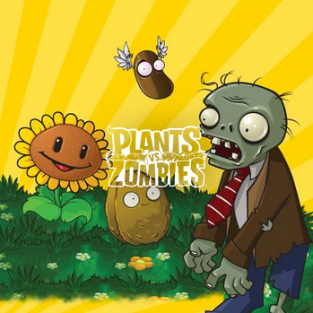

This is an alternate version of the popular Plants vs Zombies game, using python. Our version features both plants and zombies that didn't make it into the original - check them out on the units page. You can also see your scores on the scoreboard page.
Plants vs Zombies, or PvZ for short, is a "tower-defense" game in which the player must defend their home from zombies by placing plants on their lawn. These plants can perform a variety of different functions, from shooting projectiles at the zombies to generating gold for more plants or simply obstructing the zombies' paths.
Click to check out the official games!
